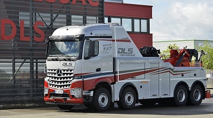

Hebt u motorpech of is uw wagen niet meer rijvaardig na een ongeval? AV-Motors helpt u uit de nood.
Onze gespecialiseerde depannagedienst staat ter uw beschikking. We zijn 24/24 en 7/7 bereikbaar
in gans het land. Wanneer u ons noodnummer belt komen wij zo spoedig mogelijk ter plaatse. U
betaalt de verplaatsing per kilometer. Afhankelijk van weekend of nacht is er een ander tarief van toepassing.
Nadat uw voertuig naar onze garage is getakeld of de plaats van uw keuze brengt onze chauffeur u naar uw thuis
(max 20 Km).

Week tussen 8-18
Nacht
Weekend
<10 km
50 euro
80 euro
100 euro
10-20 km
80 euro
100 euro
120 euro
20-40 km
100 euro
120 euro
150 euro
40-60 km
120 euro
140 euro
180 euro
+60 km
+5 euro/km
+7 euro/km
+10 euro/km
Carosserie
Onze garage beschikt over een ultra moderne carroserie dienst. Wij herstellen uw wagen na een ongeval of pech.
Zo bieden wij onder andere
Periodiek onderhoud: Zowel klein als groot periodiek onderhoud is mogelijk.
Glasbreuk: Herstellingen van sterretjes en het vervangen van gehele vensters
Uitdeuken: Deuken ten gevolge van hagelschade of een ongeval vormen geen probleem voor onze experts met jarenlange ervaring.
Herspuiten: Bent u de kleur van uw wagen beu? Onze professionele spuitstudio staat ter uw beschikking.
Wrapping:Tijdelijk een nieuw kleurtje? Laat uw wagen wrappen.
Bandenservice: Wij slaan uw winterkit op en wisselen deze ten gepaste tijden
Banden uitlijnen:Uw bestaande banden uitlijnen voor een betere verkeersveiligheid
Lichten afstellen:Kom langs alvorens u naar de technische keuren gaat en vermijdt een herkeuring.
Vervangwagen:Terwijl uw auto in herstelling is voorzien wij u van een vervangwagen van een gelijk type.
Expertise:In geval van tussenkomst van uw verzekering leveren wij een expertise bestek dewelke wordt herkend door het meeste Europese verzekeringsmaatschappij.